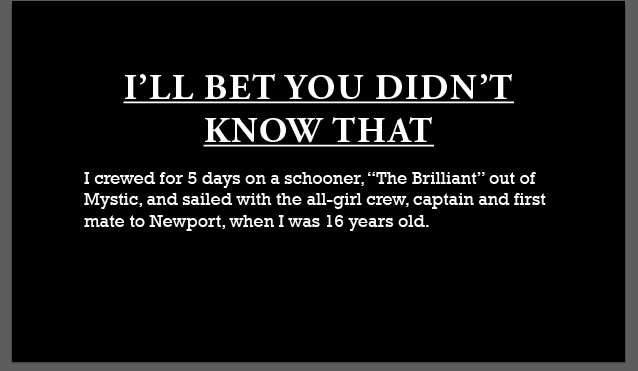

I have in my four years in IST gained expirience in a few adobe products such as Photoshop, Premiere, and a little bit of Illustrator. Below you can see examples of work I have done in these three products aswell as an unfinished project I'm currently working on for a customer.
Photoshop |
Premiere |
Illustrator |
|---|---|---|
 This is an example of my work don in Adobe Photoshop, I took an old photo of students from vinal and partially recolored it. |
This video is from a youtube project I did in sophmore year. We had fun while filming this as you will see when you watch the video. This is a one good example of my skills in Adobe Premiere. |
 This is one of many covers I created using Adobe Illustrator for a video a customer asked me to create. |